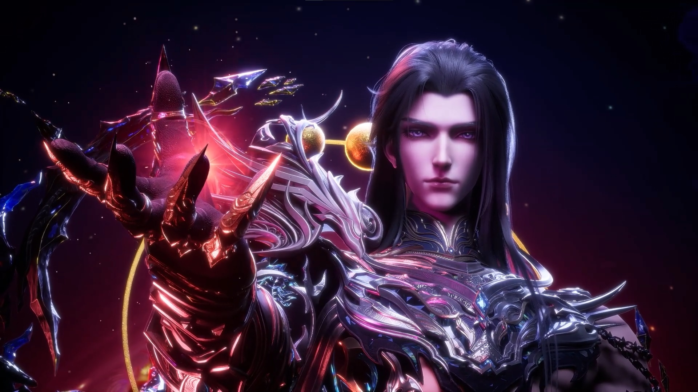

Антилопа, когда неожиданно встретила лопу:

Описание сериала
С кинопоиска: Мальчик выбирает путь рыцаря, чтобы спасти людей от демонов. Трогательное фэнтези с захватывающими боями
Вайб от эпизода
Эпизод подводит к кульминации предпоследней арки сериала, раскрывая одного из антагонистов, и это ему дается действительно хорошо. За дествием интересно наблюдать, а редизайн персонажа после обожествения просто огонь.
Цитаты
В следующеей жизни... не встречайся со мной.
Нам пришлось добиваться всего силой... и за это нас сочли преступниками. Но если мы преступники, то бездействие Богов тоже преступление.
Костями врагов мы вымостим дорогу домой.